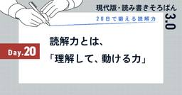

SHIFT Group 技術ブログ
https://note.shiftinc.jp
「無駄をなくしたスマートな社会の実現」を目指し、ソフトウェア製品の開発、運用、マーケティングなどあらゆる立場から携わるSHIFTグループの公式note。エンタメ・ゲーム業界から、Web系、金融／製造／小売りなどのエンタープライズ領域まで広い知見を活かした情報を発信しています。
フィード

【3日目】正規表現の抽象構文木をメモ化イテレーターの合成として解釈する【TypeScript】
SHIFT Group 技術ブログ
こんにちは、株式会社SHIFT ビジネスプロセスアウトソーシンググループに所属しているShunkiです。 運用関連のお仕事でご飯を食べさせてもらっています。 プログラミングに関する理論を調べて遊ぶのが趣味の1つです。 遊ぶさいはMicrosoftが誇るプログラミング言語、TypeScriptをよく使っています。前回、2日目のイテレーター版の実装では、重複した終了位置が生成されることで無駄な処理が発生していました。 この問題を解決するため、出力をメモして重複を排除し、より効率的な実装を目指します。続きをみる
15時間前

【Vol.3】カタログを使いこなせ！テスト設計の効率を上げる活用術！【機能テスト編】
SHIFT Group 技術ブログ
こんにちは！株式会社SHIFT TD推進の長谷です。「シンプルさは究極の洗練である。」という、天才芸術家レオナルド・ダ・ヴィンチの名言があります。「テスト観点」や「因子水準」をシンプルに整理・再利用しやすくする。それを実現してくれたのがTDの「カタログ」機能です。実際は「どう使うのが正解なのか？」と思ってる方もいるのではないでしょうか。そこで、今回はカタログの登録方法、使い方、メリットについてご紹介いたします。カタログの概要については前回の記事も合わせて読んでみてください。続きをみる
1日前

今週の新着ブログ★新作7本(2025.7.4~2025.7.10)_「シンバル分析」のススメ_アドホックテスト ほか
SHIFT Group 技術ブログ
こんにちは！「SHIFTグループ技術ブログ」編集部です。お役立ち記事を発信していますので、ぜひご注目ください！！本ブログは、IT技術だけでなくSHIFTグループのあらゆる知見やノウハウを広義の“技術”とし、入社歴や部署の垣根を超えて従業員が公式ブロガーとして記事を執筆しています。続きをみる
1日前

【PMOノウハウ 04】ベースライン管理をしっかりと～安易なベースライン変更がとんでもないことに～
SHIFT Group 技術ブログ
こんにちは！株式会社SHIFT（以下SHIFT）の能力開発部で、PMO人材の育成を担当している古井大（だいさん）です。ブログシリーズ、「プロジェクト成功への道 ～そこまでやるのかPMO～」の第11回は、【PMOノウハウ 04】として「ベースライン管理をしっかりと」についてお伝えします。続きをみる
1日前


【2日目】正規表現の抽象構文木をイテレーターの合成として解釈する【TypeScript】
SHIFT Group 技術ブログ
こんにちは、株式会社SHIFT ビジネスプロセスアウトソーシンググループに所属しているShunkiです。 運用関連のお仕事でご飯を食べさせてもらっています。 プログラミングに関する理論を調べて遊ぶのが趣味の1つです。 遊ぶさいはMicrosoftが誇るプログラミング言語、TypeScriptをよく使っています。続きをみる
2日前


【1日目】正規表現の抽象構文木を述語関数の合成として解釈する【TypeScript】
SHIFT Group 技術ブログ
こんにちは、株式会社SHIFT ビジネスプロセスアウトソーシンググループに所属しているShunkiです。 運用関連のお仕事でご飯を食べさせてもらっています。 プログラミングに関する理論を調べて遊ぶのが趣味の1つです。 遊ぶさいはMicrosoftが誇るプログラミング言語、TypeScriptをよく使っています。続きをみる
2日前

ノウハウ(know how)だけじゃない！？属人化を防ぐ14の切り口
SHIFT Group 技術ブログ
こんにちは。 株式会社SHIFTの能力開発部で検定や教育制度を開発している林 稔明（りんりん）です！続きをみる
2日前

「やりたいことがない」という人へ
SHIFT Group 技術ブログ
こんにちは、SHIFTの能力開発部で検定や教育制度の開発を担当している林稔明（りんりん）です。 日々、能力開発について研究し、様々な施策を実行、発信しています。続きをみる
2日前


飲み会は悪なのか。仕事の進め方から考える飲み会の位置づけ
SHIFT Group 技術ブログ
こんにちは。能力開発部で検定や教育制度を開発をしている林 稔明（りんりん）です！ 日々、能力開発について研究し、様々な施策を実行、発信している立場から新社会人に向けて情報を発信していきたいと思います。続きをみる
5日前

言語化力がある人が勝つ時代に
SHIFT Group 技術ブログ
こんにちは、SHIFTの能力開発部で検定や教育制度の開発を担当している林稔明（りんりん）です。 日々、能力開発について研究し、様々な施策を実行、発信しています。続きをみる
5日前


20日で鍛える読解力：Day21｜自分だけの読解力の“取扱説明書”をつくろう
SHIFT Group 技術ブログ
「読み・書き・そろばん」を、いまの時代にアップデート。現代の社会人に必要な「読む・書く・考える」力を、あなたに。このシリーズは、「読解力＝読む力」にフォーカスした20日間トレーニング。仕様書、チャット、提案書──あらゆるビジネスの“読み方”を、見直してみませんか？「読むことは、動くこと。」をテーマに、読解力を“使える力”として育てていきます。続きをみる
7日前

20日で鍛える読解力：Day20｜読解力とは、「理解して、動ける力」
SHIFT Group 技術ブログ
「読み・書き・そろばん」を、いまの時代にアップデート。現代の社会人に必要な「読む・書く・考える」力を、あなたに。このシリーズは、「読解力＝読む力」にフォーカスした20日間トレーニング。仕様書、チャット、提案書──あらゆるビジネスの“読み方”を、見直してみませんか？「読むことは、動くこと。」をテーマに、読解力を“使える力”として育てていきます。続きをみる
8日前

今週の新着ブログ★新作25本(2025.6.27~2025.7.3)_やってみようNetDevOps_20日で鍛える読解力_など
SHIFT Group 技術ブログ
こんにちは！「SHIFTグループ技術ブログ」編集部です。お役立ち記事を発信していますので、ぜひご注目ください！！本ブログは、IT技術だけでなくSHIFTグループのあらゆる知見やノウハウを広義の“技術”とし、入社歴や部署の垣根を超えて従業員が公式ブロガーとして記事を執筆しています。続きをみる
8日前
20日で鍛える読解力：Day19｜読解力が高い人は、「問い」を持っている
SHIFT Group 技術ブログ
「読み・書き・そろばん」を、いまの時代にアップデート。現代の社会人に必要な「読む・書く・考える」力を、あなたに。このシリーズは、「読解力＝読む力」にフォーカスした20日間トレーニング。仕様書、チャット、提案書──あらゆるビジネスの“読み方”を、見直してみませんか？「読むことは、動くこと。」をテーマに、読解力を“使える力”として育てていきます。続きをみる
9日前
20日で鍛える読解力：Day18｜問い返しながら読む。それが“能動的な読解”
SHIFT Group 技術ブログ
「読み・書き・そろばん」を、いまの時代にアップデート。現代の社会人に必要な「読む・書く・考える」力を、あなたに。このシリーズは、「読解力＝読む力」にフォーカスした20日間トレーニング。仕様書、チャット、提案書──あらゆるビジネスの“読み方”を、見直してみませんか？「読むことは、動くこと。」をテーマに、読解力を“使える力”として育てていきます。続きをみる
10日前
20日で鍛える読解力：Day17｜速く読む＝読解力が高い？という誤解
SHIFT Group 技術ブログ
「読み・書き・そろばん」を、いまの時代にアップデート。現代の社会人に必要な「読む・書く・考える」力を、あなたに。このシリーズは、「読解力＝読む力」にフォーカスした20日間トレーニング。仕様書、チャット、提案書──あらゆるビジネスの“読み方”を、見直してみませんか？「読むことは、動くこと。」をテーマに、読解力を“使える力”として育てていきます。続きをみる
11日前
20日で鍛える読解力：Day16｜すべてを読まなくていい
SHIFT Group 技術ブログ
「読み・書き・そろばん」を、いまの時代にアップデート。現代の社会人に必要な「読む・書く・考える」力を、あなたに。このシリーズは、「読解力＝読む力」にフォーカスした20日間トレーニング。仕様書、チャット、提案書──あらゆるビジネスの“読み方”を、見直してみませんか？「読むことは、動くこと。」をテーマに、読解力を“使える力”として育てていきます。続きをみる
12日前